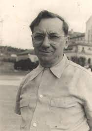

<html>

</html>
  <head>
    <title>Cândido Portinari</title>
    <link rel="stylesheet" href="style.css">
</head>
  <body>
  <h1>Cândido Portinari</h1> 
  
    <p>Quando se fala em pintores brasileiros famosos, talvez o primeiro a ser lembrado é Cândido Portinari. Isso porque sua obra constitui um retrato autêntico e singular do povo brasileiro do século XX.
Portinari nasceu em 1903 no interior de São Paulo, em uma fazenda de café no pequeno município de Brodowski.</p>
<ul>
    <li id="os retirantes">os retirantes</li>
     <li id="o lavrador de café">o lavrador de café</li>
    <li id="o mestiço">o mestiço</li>
</ul>
  <a href="file:///D:/artista/obras.html">Obras do Artista</a>
  <h2>Não conhece o artista <b>Candido Portinari</b>? 
Então assista o video abaixo, e saiba sobre sua historia
  </h2>
    <iframe src="https://www.youtube.com/embed/29VaYrBS-uc" frameborder="0" width="420" height="315"></iframe>


</body>
